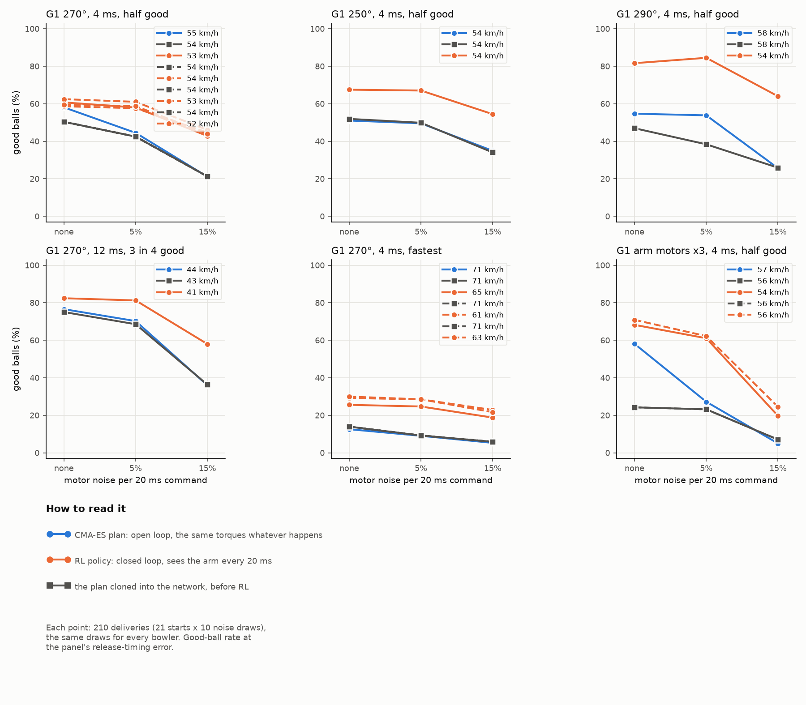
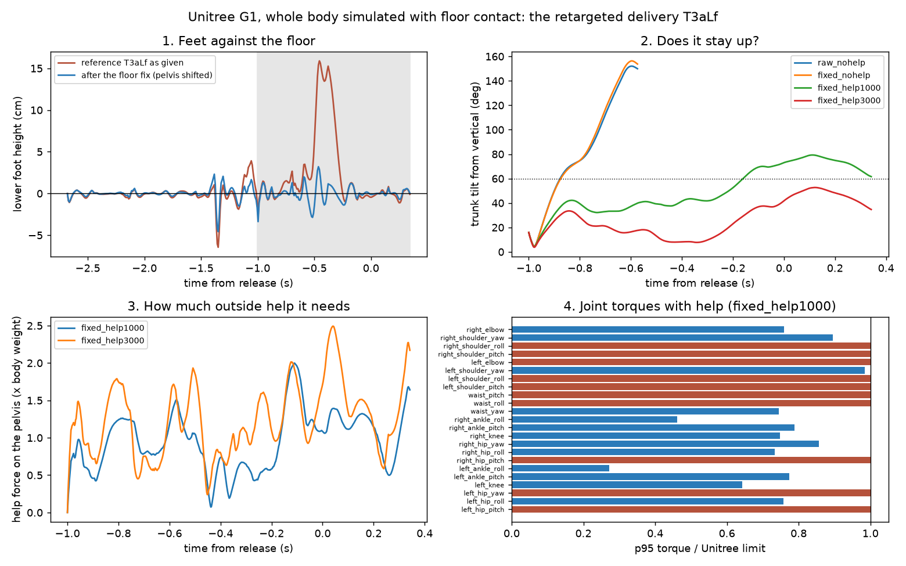
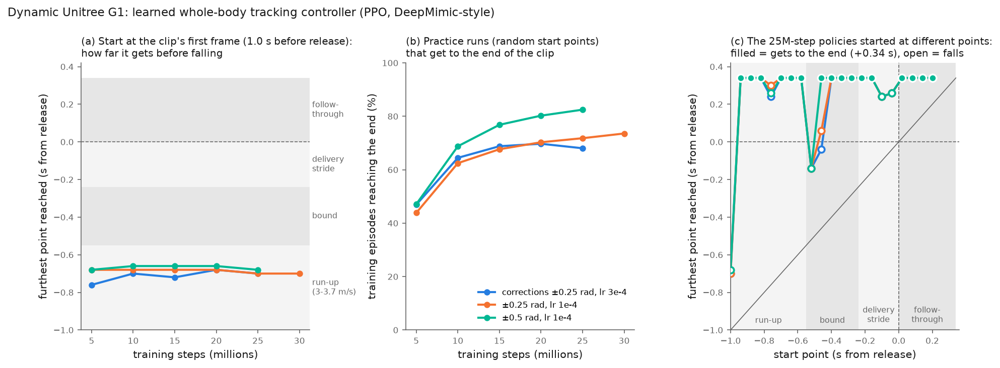

Written overnight 26–27 Nov for the Fri 27 Nov meeting. Read it top to bottom once (about 40 minutes). Every idea comes as: what it means in one line, an everyday picture, then the numbers. Green boxes are lines you can say as they are. Orange boxes are the honest catches: say them before you're asked. Sections 1–4 are the whole project from the start. Sections 5–7 are the humanoid robot work since 20 Nov, including what was done tonight. Section 8 is a cheat sheet for the meeting.
We teach a simulated bowler to bowl fast, accurate, LEGAL deliveries, and ask what limits it.
A real person was recorded bowling in the motion-capture lab. We put that motion into a physics simulator. The body copies the recording, but the bowling arm is driven by motors that a computer program controls. The program has to bowl a ball that is legal (the elbow may straighten by 15° at most, the ICC rule), pitches on a good length and stays on line. We found that pace is limited by timing: a fast ball must leave the hand within about a millisecond of the right moment. We found that RL is needed on top of a plain optimiser because RL watches the arm and corrects it when the muscles don't do exactly what was asked. Since 20 Nov the whole bowler is a real humanoid robot (the Unitree G1), to see what a real machine could do.
Meaning: cameras track reflective markers on the bowler 100 times a second. That gives the 3-D path of every body part.
Our recording: Qualisys system, IOR full-body marker set, captured on 1 Oct. A program fits a skeleton (bones and
joints) to the markers. Our main delivery is called T3a. T3aL is the same delivery with the
legs fixed ("L" = legs). After the jump no leg markers were tracked, so the fit had guessed the legs and the feet slid.
We pinned the feet where the lab video shows them on the ground.
Meaning: MuJoCo is a physics engine, like a video game's physics but accurate. It works out how bodies move under forces, 500 times per simulated second (2 ms steps).
| Rule | Meaning |
|---|---|
| Legal | The elbow straightens by at most 15° between the arm passing horizontal and the release (ICC law). Measured from the simulated joint angle. |
| On length | Pitches 10.9–12.9 m from the release point (a good length). |
| On line | Within 0.5 m either side of the middle. |
Speeds are always given in km/h at release.
Meaning: real bowlers are never perfectly repeatable, so we add two kinds of random error on purpose.
Every bowler bowls 210 deliveries: 21 different start times × 10 random motor-noise draws. All bowlers get the same random draws ("common random numbers"), so differences are the bowlers', not luck. For timing error we don't even sample: the simulator works out the exact chance of a good ball from where the ball would land if it left a little earlier or later.
An engineer finds the best single ball; we copy it into a network; a coach then improves the network.
Meaning: an optimiser. It tries many versions of the arm's torque plan, keeps the best, tries variations of those, and repeats, until the ball is as fast as possible while still good.
The plan is a list of torques over time, 20 "knots" joined by straight lines. It is open loop: the same torques whatever happens, like a recorded dance. Asking "what is the fastest ball that is still good with probability τ?" for several τ gives the frontier: the pace you must give up for reliability.
Meaning: train a neural network to give the same torques as the CMA-ES plan in the same situations.
We bowl the plan many times with small nudges, record "arm state → torque the plan used", and fit the network to it. The copy (the "clone") is not perfect: it can be a bit off, especially for very fast, precise balls.
Meaning: RL learns by practice. The bowler bowls thousands of balls, and gets a reward (points for pace and for landing on a good length; nothing for an illegal ball). The network is nudged towards whatever earned more reward. PPO (Proximal Policy Optimisation) is the standard RL method that does this in small, safe steps.
log std −3.2), because random tries ruin a ball that must be timed
to 1 ms.tt0p5 = 0.5): tells RL "aim for half the balls good under timing error", so
it doesn't drift to safe, slow balls.Training needs a lot of computing, so it runs on the university cluster (the HPC), never on the laptop. You
connect through FortiClient VPN and SSH. A job is a request for some processors for some hours. A
pack (hpc/packs/*.txt) is a list of runs that one job does side by side. The scheduler is PBS
(qsub = submit, qstat = check).
| Finding | In numbers |
|---|---|
| Pace is a timing skill. The faster the ball, the narrower the moment you may let go. | ~100 km/h: release within ~1 ms. ~55 km/h: anywhere in a 20–60 ms window. Fastest reliable ball: ~90 km/h with elite timing (1 ms), ~55 with ordinary (12 ms). |
| RL is needed on top of CMA-ES because of motor noise. | With timing error only, they're equal (CMA-ES is the ceiling). At 15% motor noise: CMA-ES plans keep 3–15% good balls, RL 19–70%. Even CMA-ES re-optimised under noise only reaches 15–30%. |
| Weak arms still bowl legally (human-like and robot motor limits). | Human-like arm: 94 km/h fastest, 72 at 3-in-4 good. G1 arm on the human body: 95 / 68. H1: 86 / 59. |
| Constrained RL (the ICC law as a constraint, PPO-Lagrangian). | Gets to 0% illegal as fast as the hand-picked penalty, 2–3 km/h faster. |
Full details: docs/progress_since_6nov.pdf and docs/progress_since_20nov.pdf.
Supervisor, 20 Nov: "the main next step is an actual humanoid robot model". Now the whole bowler is a G1.
Until 20 Nov only the arm had robot limits. It was still attached to the human skeleton. Now everything is the robot: the G1's own body, link lengths, masses, joint ranges and motors. The model is the official one from MuJoCo Menagerie (29 joints, 1.32 m, 33 kg).
Meaning: the G1 is shorter than the bowler (its legs are 0.74× as long), so it can't copy positions. It copies directions: for every frame, find the robot joint angles that point its thigh, shin, foot, upper arm, forearm and hand the same way as the bowler's. This is "inverse kinematics" (IK), solved frame by frame inside the robot's joint limits.
Same task and scoring as before, but: the body is the G1 replaying the retargeted motion, and the bowling arm is the G1's own 7-joint arm with its real motors: 25 N·m at shoulder and elbow (a human shoulder is ~45–84), 5 N·m at the wrist, top speed 37 rad/s. The G1's elbow counts 0 at a right angle and +90° straight, so we convert before applying the 15° rule.
| Check | Result |
|---|---|
| Joint speeds in the delivery stride | All within the G1's motors |
| Copying the human arm swing | Needs 3.4–3.7× the G1's shoulder torque. Replayed anyway: 46 km/h, 1.8 m off line |
| Waist torque around release | Needs roll 207 N·m and pitch 111 N·m against a 50 N·m limit (2–4×). The waist is the bottleneck. |
| Setting | Fastest (no timing error) | Good half the time (τ 0.5) | 3 in 4 (τ 0.75) |
|---|---|---|---|
| 270°, very good timing (4 ms) | 70.9 | 54.8 | 48.5 |
| 250°, 4 ms | 77.2 | 54.4 | 48.7 |
| 290°, 4 ms | 67.2 | 58.3 | 54.9 |
| 270°, ordinary timing (12 ms) | 70.9 | 47.0 | 44.1 |
| 270°, arm motors ×3 (≈ human strength) | 88.2 | 57.5 | 53.1 |
| 270°, arm free from the start (no human swing) | 76.6 | 53.7 | 54.7 |
km/h. The human-limit model with the same settings bowled 130 km/h.
The same CMA-ES → clone → PPO pipeline, now on the robot. 17 PPO runs (24 Nov, H200 node), scored tonight.
Each CMA-ES optimum above was cloned into a network, and PPO trained it for 4 million more steps on the G1. Then the plan, the clone and the trained bowler were all bowled under exactly the same noise.

Good balls (%) at each bowler's timing skill, with no / 5% / 15% motor noise:
| G1 setting | Bowler | km/h | none | 5% | 15% |
|---|---|---|---|---|---|
| 270°, 4 ms, aim: half good | CMA-ES plan | 55 | 58 | 44 | 21 |
| clone | 54 | 50 | 42 | 21 | |
| RL (4 seeds) | 53–54 | 59–62 | 58–61 | 43–46 | |
| 250°, 4 ms, half good | CMA-ES plan | 54 | 51 | 50 | 35 |
| RL | 54 | 68 | 67 | 54 | |
| 290°, 4 ms, half good | CMA-ES plan | 58 | 55 | 54 | 26 |
| RL | 54 | 82 | 84 | 64 | |
| 270°, 12 ms (ordinary), 3 in 4 | CMA-ES plan | 44 | 77 | 70 | 36 |
| RL | 42 | 82 | 81 | 58 | |
| 270°, 4 ms, fastest | CMA-ES plan | 71 | 13 | 9 | 5 |
| RL (3 seeds) | 61–65 | 26–30 | 25–29 | 19–23 | |
| arm motors ×3, half good | CMA-ES plan | 58 | 58 | 27 | 5 |
| RL (2 seeds) | 54–56 | 68–71 | 61–62 | 20–25 |
What it shows, in plain words:
Videos (laptop): results/kinematic/videos/kin2_g1_tt0p5_j4_h500_a270_T3aL_1.mp4 (half good, 54 km/h), kin2_g1_fast_h500_a270_T3aL_0.mp4 (fast, 65 km/h), kin2_g1_tt0p5_j4_h500_a290_T3aL_0.mp4 (290°).
Short answer: not yet. With only its joint motors following the motion, the G1 falls over within half a second.
Why this test: everything so far had the body prescribed: forced along the motion, no floor, no
balance. A real robot has to stand on the floor and balance itself. So tonight's new script
(scripts/g1_dynamic.py) simulates the whole G1 physically: floor contact through its feet, gravity,
and all 29 joints on Unitree's own position motors with their real torque limits (hips and knees 88–139 N·m, ankles
50, waist 50–88, arms 25). Each motor tries to follow the retargeted delivery.
The retarget had never checked the feet against the ground. In the G1 motion the lower foot was 7 cm under the floor on average (11 cm at worst), and the "planted" foot slid at about 2 m/s. In the old prescribed model this didn't matter (there was no floor), but a real robot can't do it.
Fix (retarget_g1.py --feet --froude, new reference T3aLf): the IK now also solves where
the pelvis is, keeps every foot point above the floor, and pins a foot flat to the ground while the bowler's foot is
planted. Result: feet on the floor (within ~2 cm), sliding down from 2.2 to 0.6 m/s, and smoother (the pelvis's
hardest accelerations 2.8 g → 2.4 g).
Froude scaling (the --froude part): a smaller body moving with the same timing as the human is not
physically similar, because gravity doesn't shrink. The standard rule (equal Froude number) is: lengths × 0.74, so
time × √0.74 = 0.86. The robot version therefore plays 14% slower. Like a small animal's stride compared with a big
one's.

| Run | What happens |
|---|---|
| Motors only, no help | Falls ~0.15 s after the start (original reference: ~0.45 s). Trunk tips past 60°. |
| Motors + "help": a virtual spring holding the pelvis on its path | Gets through the delivery, but the spring has to push up to about 2× body weight (p95) at the strongest setting. Weaker springs aren't enough: it still falls. |
| Joint motors (with help) | Bowling arm and waist at their torque limit most of the time; hip pitch and one ankle at their limit too. |
Why it falls: it starts mid run-up, leaning forward ~16° and moving at 2.5 m/s. Motors that only copy joint angles have no idea about balance. A human (and every walking robot) constantly adjusts to stay up. The robot needs a balance controller, and for a motion this violent that means training one with RL (motion-tracking RL, as in DeepMimic or the recent G1 papers), on GPUs.
Videos (on the laptop, not on GitHub): results/kinematic/videos/g1_dynamic_fixed_nohelp.mp4 (falls), g1_dynamic_fixed_help3000.mp4 (with help).
Meaning: instead of motors blindly copying joint angles, a PPO network adds small corrections (at most ±0.25 or ±0.5 rad) to every motor's target, every 20 ms, while watching the whole body. It earns points for staying close to the reference motion (joint angles, joint speeds, hand and foot positions, pelvis) and the episode ends if it falls. Each practice run starts at a random moment of the delivery ("reference state initialisation"), so it learns every part of the clip. This is the DeepMimic recipe (Peng et al. 2018), the standard way humanoid robots learn captured motions.
Code: envs/g1_track_env.py, scripts/train_g1_track.py. Three runs on the HPC (jobs
47153, 47156, 47157), 8.5 h each, ~70 million practice steps each. Every 5 million steps the policy tries the
whole delivery from the start; the test is whether it gets to the end without falling
(logs/g1track_*/eval.csv).
Result after 25 million practice steps (about 3 h per run, overnight):
| Start point | What happens (all three runs agree) |
|---|---|
| 0.94 s before release (mid run-up, 3+ m/s) | Gets through the whole delivery without falling: run-up, bound, back-foot and front-foot landing, release and follow-through: 64 steps, 1.28 s. Joints within ~8–11° of the reference on average, pelvis within ~0.12–0.2 m. |
| The clip's very first frame (1.0 s before) | Falls after ~0.3 s. The reference itself is faulty there: the retargeted pelvis whips through ~21° in its first 40 ms (13 rad/s), which no body does. It's an edge artefact of the retargeting, not the controller's fault. |
| Other start points, every 60 ms | Finishes from 15 of 21 start points (16 for the ±0.5 rad run). It falls from a few awkward ones: one in the run-up and the take-off of the bound (both of these lose balance late, after release or just before it), and 0.1 s before release (there it lasts until +0.25 s, nearly to the end). |
Training progress (panel b): the share of practice runs that reach the end went from 45% at 5M steps to 68–82% at 25M steps, still rising. The ±0.5 rad run (larger corrections allowed) is best.
The catch: the arm is slower. The bowling hand reaches ~33–37 km/h at release, against ~50 km/h in the reference (both measured at the wrist on the 20 ms grid). The controller keeps the robot up by giving up some arm speed. This matches section 6: the G1's arm motors are about 3× too weak for the human swing.

(a) From the very first frame it falls in the run-up every time (the reference artefact). (b) Practice runs reaching the end of the clip. (c) The 25M-step policies started at different points: filled dots reach the end, open dots fall (y = where). Files: results/kinematic/g1/track_starts_*.json, track_*_eval.csv. Video (on the laptop): results/kinematic/videos/g1track_a050_lr1e4_s2_k3.mp4 (whole delivery) and _k0.mp4 (the first-frame fall). The runs keep training until ~05:45 UTC (~70M steps); these are the 25M checkpoints.
Q: Is the body physically simulated now?
In the bowling results (sections 5–6), no: the body is prescribed and only the arm is torque-driven, as before. The dynamic test (section 7) is the first fully physical one. Motors alone fall over. With the RL tracking controller trained overnight, the whole robot gets through the delivery on its own feet (7c), but there's no ball in that version yet.
Q: Why is the G1 so much slower than the human-limit model?
Weak arm motors (25 N·m) are only part of it: ×3 motors only lifts 71 → 88 km/h. The rest is the smaller body (0.74× length, so a shorter lever and slower hand at the same joint speed) and the waist, which can't side-bend like a fast bowler's trunk.
Q: What are your "two sets of limits"?
Real robot = G1 body + G1 motors. Human-like = the human-strength arm (from published strength data), or the G1 with ×3 arm motors.
Q: Why do you still need RL if CMA-ES finds the delivery?
A CMA-ES plan is open loop and falls apart under motor noise. RL watches the arm every 20 ms and corrects. Same-noise tests show it on the human-limit model, and now on the G1 too (section 6).
Q: What is Froude scaling?
The rule for making a small model move in a physically similar way to a big one: keep gravity's effect the same. Lengths × 0.74 means times × √0.74 ≈ 0.86. Engineers use it for ship models, and biologists to compare animal gaits.
Q: How would you make the robot balance?
That's what we did overnight (7c): a whole-body tracking policy trained with RL. It sees all 29 joints and the body's state, adds corrections to every motor target, and is rewarded for staying close to the reference motion without falling (DeepMimic-style). After 25M steps on CPUs it gets through the whole delivery. Next: put the bowling objective on top; GPUs (MuJoCo MJX / Isaac) would make it ~100× faster.
Q: Is the elbow law still checked on the robot?
Yes, the same ≤15° rule. The G1's elbow angle is converted (flexion = 90° − joint angle). Every G1 delivery reported is legal.
| Word | Plain meaning |
|---|---|
| Torque (N·m) | Turning force at a joint. |
| Prescribed / kinematic | Forced to follow a recorded motion; doesn't balance. |
| Dynamic | Moved only by forces (motors, gravity, floor), so it can fall. |
| Open loop / closed loop | A fixed plan / a controller that watches and reacts. |
| Retargeting, IK | Fitting a motion onto a different body; finding joint angles that put body parts where you want. |
| Frontier | Fastest ball at each required reliability (τ). |
| τ (tau) | Required chance of a good ball under timing error. |
| Timing SD (ms) | How much the release moment wobbles: 4 ms very good, 12 ms ordinary. |
| Motor noise (%) | Each torque command randomly a few % off. |
| Behaviour cloning | Training a network to copy a plan. |
| PPO | The RL method: learn by practice and reward, in small steps. |
| BW | Body weight (the G1: 33 kg ≈ 327 N). |
| HPC, job, pack | The university cluster; a request for processors; a list of runs in one job. |
| What | Where |
|---|---|
| G1 bowling environment | envs/g1_bowl_env.py |
| Retarget (and the new --feet --froude) | scripts/retarget_g1.py |
| Dynamic whole-body test (new) | scripts/g1_dynamic.py → results/kinematic/g1/dynamic_*.png/json |
| CMA-ES frontier | scripts/kin_frontier.py → results/kinematic/frontier/g1/ |
| Clone, PPO, scoring | scripts/bc_from_frontier.py, train_runup.py, kin_equifinality.py |
| Same-noise comparison | scripts/compare_cmaes_rl.py → results/kinematic/cmaes_vs_rl/g1_*.json |
| Videos | results/kinematic/videos/ (laptop only) |
| Meeting prep | docs/meeting_2026-11-27.md |